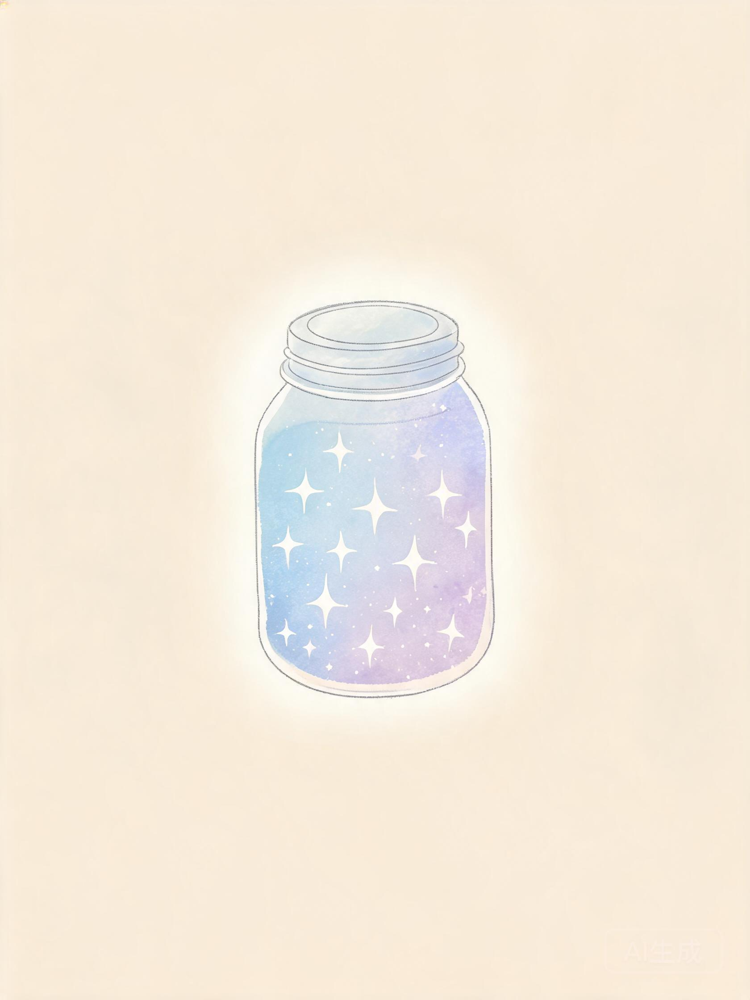

今天也慢慢来。
挑一件小事，现在就开始，让日子和花园一起生长。
今日完成
0%完成 0 / 0 项计划
先照顾今天的自己。
要提醒自己的小事，先放在这里
YOUR EFFORT, IN BLOOM
把努力，种成一座花园。
一件小事，一点养分。每一次盛放，都有新的相遇。
慢慢花园
今天，也在生长。
休息时，花园也会等你。
植物不会因为离开而枯萎。养分永久保留，已经开花的植物可以留在花圃里欣赏。
下一株，会是什么颜色？
用盛放换来的小小花券，拆开一份来自花园的惊喜。
初次来到花园，赠送小雏菊与 3 张花券。
相遇记录
最近 60 次，保底跨天保留一页一页，收集四季。
把偶遇，变成心之所向。
重复植物自动变成碎片，慢慢攒，也能换到喜欢的那一株。
给今天，
一个新的视角。
静下来，想一想此刻的自己。
选一张牌，收下一份温柔的提示。
每天一次，自由抽取。
不消耗花园的养分或花券。
翻过的日子
把计划放进时间，把日常留成记忆。
轻一点的工具，陪你找到自己的节奏。
点一下模板，就把这件小事放进今日待办
A MOMENT OF FOCUS
这一刻，只做好一件事。
把一个知识点贴进来，助手只负责提问，帮你自己发现理解盲区。答案要你亲手写。
上传图片或 PDF，解析成文字草稿。解析只在点击后进行，结果确认后才会保存。
知识点收进来，到日子轻轻提醒一次，不催不罚。复习节奏在本机计算，不联网。
填入你的 DeepSeek 密钥，即可把分拣 / 费曼 / 助记 / 引导切到真实模型。密钥保存在本机浏览器；调用时会将密钥和本次输入发送到你填写的 API 地址。随时可以切回示例模式。
未连接。插件当前使用示例数据。
更多功能正在慢慢长出来，敬请期待。
数据保存在本设备浏览器中，清理缓存或更换设备会丢失，建议定期导出。
聚焦今日要事。
一张柔光的桌面，放文字和图片的碎片，想留下时再归档成书。
桌面还空着。文字或图片都可以放上来。
拖动碎片到右边的书上即可归档；也可以用碎片上的按钮送进思绪整理。
书架上还没有书。点「建一本书」，再把桌面的碎片拖进来。
不用想得很完整，先把脑海里的声音放下来。
一页想法，一点灵感。慢慢整理成能做的事。
以上插件只在点击时运行（当前为示例数据），结果仅供参考，你确认后才会写入。
今天的你，值得被好好记录。

A QUIET PLACE, JUST FOR YOU
在这里，
每一种心情都有位置。
把今天轻轻放下，让心事慢慢落地。
今晚的天空，也在安静地陪着你。HOW ARE YOU, REALLY?
今天感觉怎么样
记下感受，让今天的安排更贴近你。
只给建议，日程怎么安排由你决定。这些日子，慢慢生长
最近 12 周 · 颜色记录努力，空白也可以是休息。
长按任务可以封存，想它的时候再捞起来。今天先放着，也没关系。

里面已经很满了
罐子还是空的。今天有什么小事吗？
写给未来的自己，到日子会静静开花。和罐子里的小确幸一样，都替你好好收着。
还没有照片。放一张，这一天就留在轨道上了。